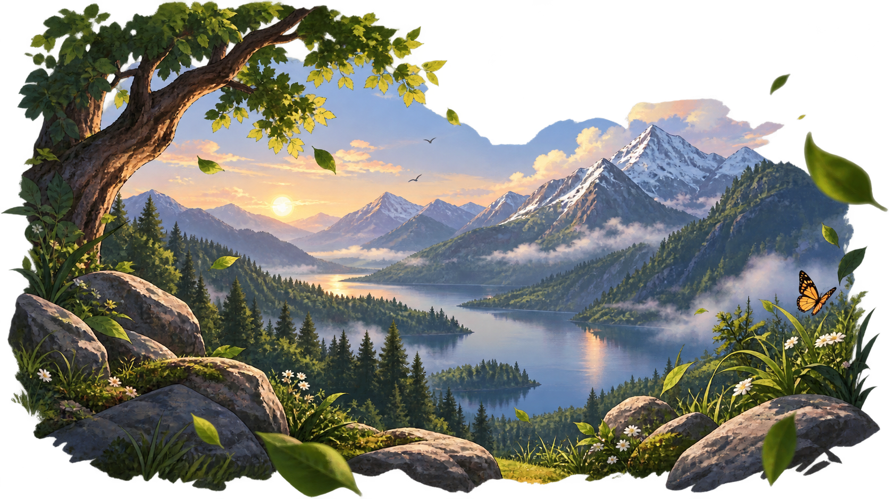

Everything needs to cooperate in nature.
Welcome
A quieter place for your ideas to grow.

Welcome to
A quieter space to think, create, and grow.
About
NatureOS is something more than just an OS
Press Enter to begin
NatureOS needs JavaScript for its live system details.